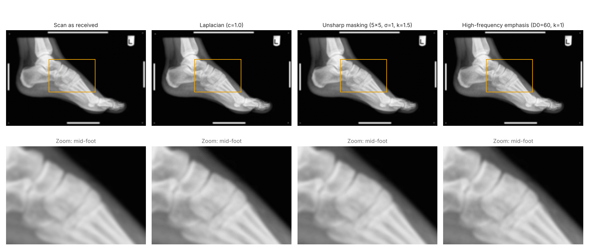
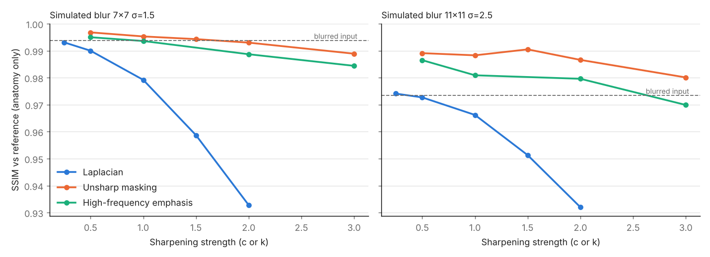

Projects / P-08
Data, code & AI
X-ray filter toolkit
Sharpening a blurred foot X-ray with three classic filters, and comparing them with numbers as well as by eye.
P-082026
- Project
- Sharpening a blurred X-ray, and measuring which method works
- Context
- Self-directed, built from MSc coursework
48.8 dBbest PSNR, unsharp masking
0.997best SSIM
3filters compared
9unit tests
The question
Which sharpening method best restores a blurred X-ray, and when does sharpening start to create misleading artefacts?
What I did
- Modelled blur as convolution with a Gaussian kernel, then sharpened with Laplacian filtering, unsharp masking and high-frequency emphasis.
- Ran a controlled test: blurred a clean image by a known amount, sharpened it, and scored the result with PSNR and SSIM inside the anatomy only.
- Scored the real blurred scan, which has no clean reference, on edge strength, background noise and clipped pixels.
- Packaged the work as a reusable Python module with a scoring script, a figure script and unit tests.
What I found
Unsharp masking gave the best restoration in every controlled test: at mild blur it lifted PSNR from 40.4 dB to 48.8 dB. High-frequency emphasis came second, and the Laplacian mostly added fine-scale noise. Pushing any method too hard creates halos and clipping, which matters because an artefact on a medical image can be read as a real feature.
Figures

